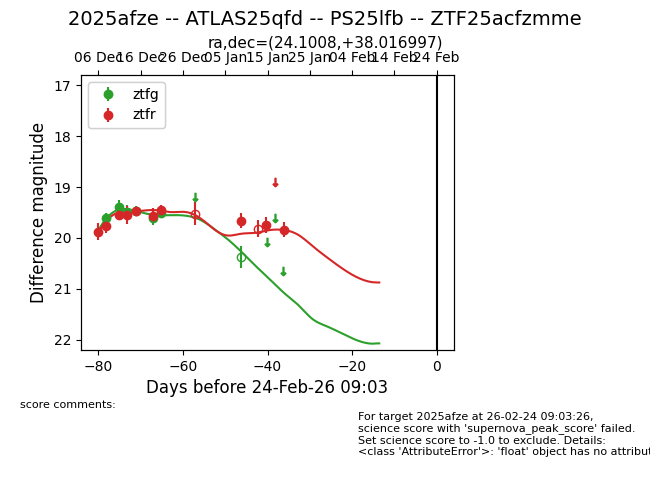
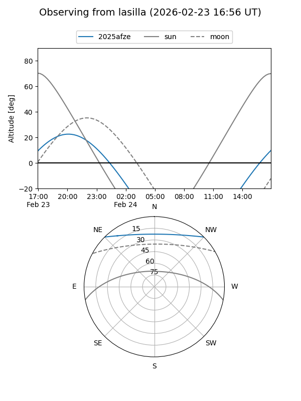
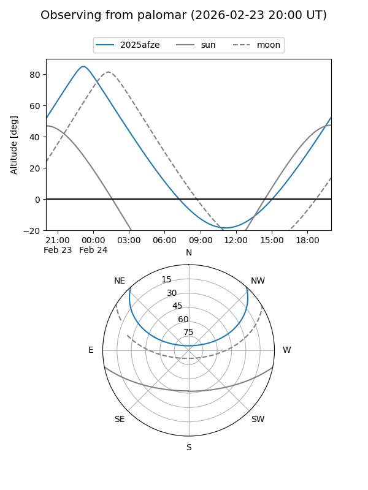
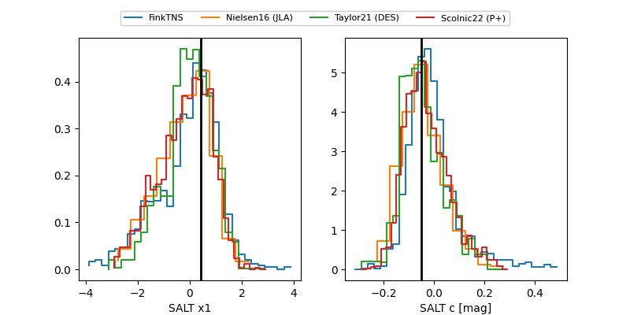

2025afze
Target 2025afze at 2025-12-19 06:49
Aliases and brokers:
FINK: fink-portal.org/ZTF25acfzmme
Lasair: lasair-ztf.lsst.ac.uk/objects/ZTF25acfzmme
ALeRCE: alerce.online/object/ZTF25acfzmme
TNS: wis-tns.org/object/2025afze
YSE: ziggy.ucolick.org/yse/transient_detail/2025afze
alt names
ZTF25acfzmme (ztf,fink_ztf)
2025afze (tns,yse)
Coordinates:
equatorial (ra, dec) = 24.1008,+38.01700
equatorial (HMS+DMS) = 01:36:24.19,+38:01:01.19
galactic (l, b) = (132.6108,-24.00821)
Flags:
Photometry:
last ztfg=19.61, ztfr=19.57
5 ztfg, 6 ztfr detections
Lightcurve

Visibility


Additional plots
